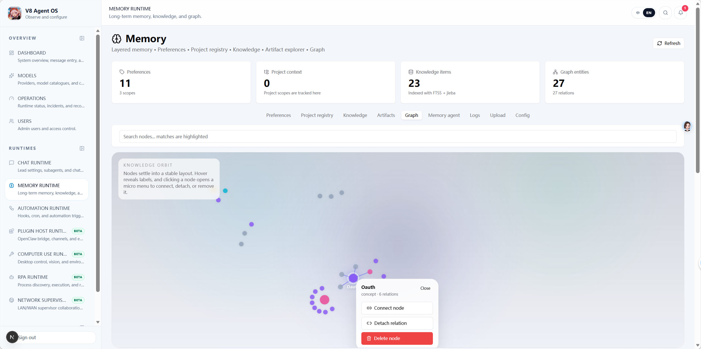

Graph-Layered Memory with UI Interventions
True memory isn't just dumping a static CLAUDE.md file. V8 employs a dedicated Memory Agent running background sanitation. The killer feature? A visual UI graph where operators can surgically sculpt and override individual knowledge nodes.
